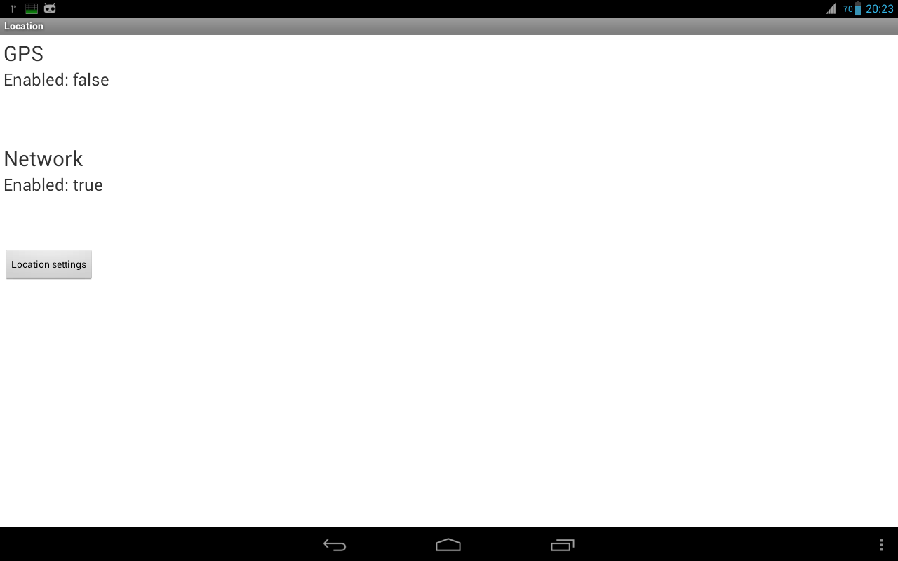
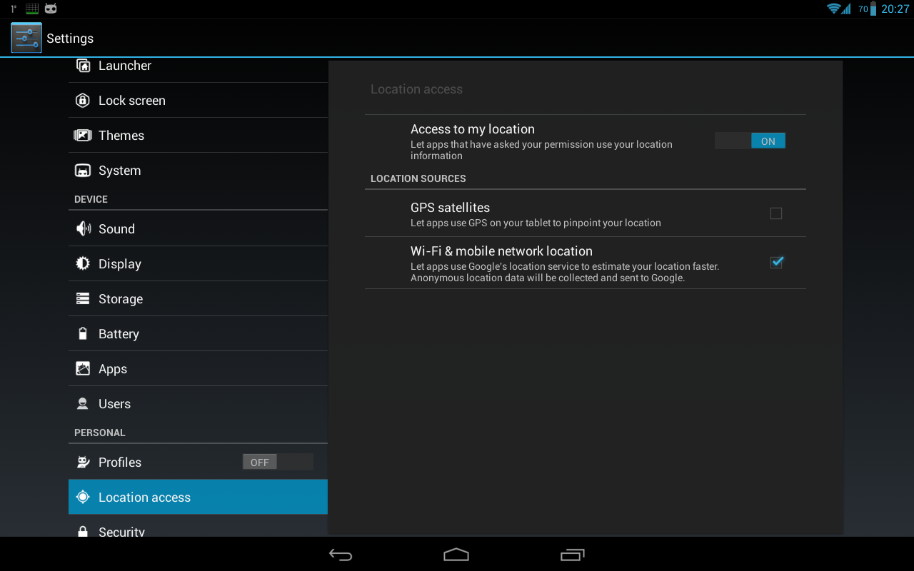
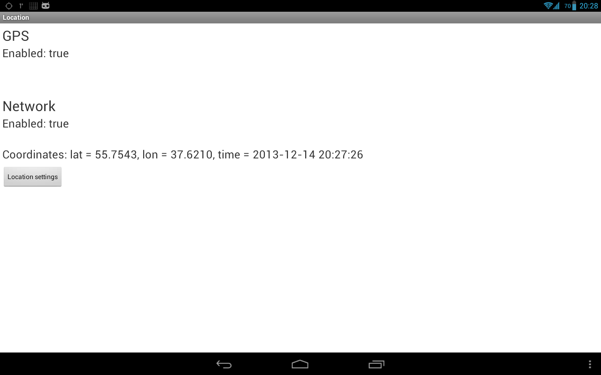
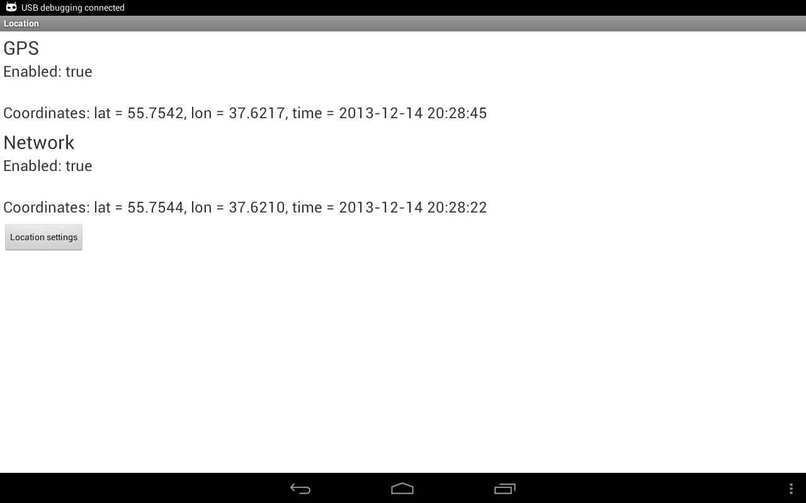
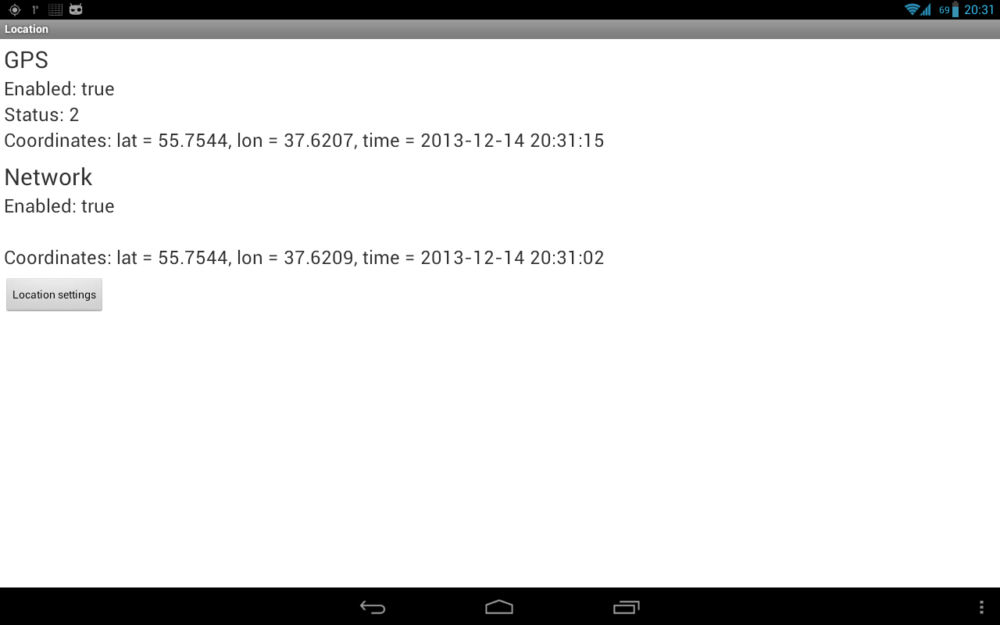

В этом уроке:
- получаем данные о местоположении
Android устройства могут предоставить нам данные по нашему текущему местоположению. Это, конечно, очень удобно и вовсю используется для, например, пользования картой, получения актуальной для вашей местности информации (прогноз погоды), всевозможных чекинов и пр.
Реализация этого всего вполне проста. Мы вешаем слушателя на провайдера и получаем данные. На данный момент есть два провайдера: GPS и Network.
GPS – тут все понятно, это данные с GPS-спутников.
Network – это координаты, которые можно получить через сотовую связь или WiFi. Для этого провайдера нужен инет.
Напишем простое приложение, которое будет запрашивать и отображать координаты.
Создадим проект:
Project name: P1381_Location
Build Target: Android 4.0
Application name: Location
Package name: ru.startandroid.develop.p1381location
Create Activity: MainActivity
В strings.xml добавим строки:
<string name="provider_gps">GPS</string>
<string name="provider_network">Network</string>
<string name="location_settings">Location settings</string>
Экран main.xml:
<?xml version="1.0" encoding="utf-8"?>
<LinearLayout
xmlns:android="http://schemas.android.com/apk/res/android"
xmlns:tools="http://schemas.android.com/tools"
android:layout_width="match_parent"
android:layout_height="match_parent"
android:orientation="vertical"
android:padding="5dp">
<TextView
android:id="@+id/tvTitleGPS"
android:layout_width="wrap_content"
android:layout_height="wrap_content"
android:text="@string/provider_gps"
android:textSize="30sp">
</TextView>
<TextView
android:id="@+id/tvEnabledGPS"
android:layout_width="wrap_content"
android:layout_height="wrap_content"
android:textSize="24sp">
</TextView>
<TextView
android:id="@+id/tvStatusGPS"
android:layout_width="wrap_content"
android:layout_height="wrap_content"
android:textSize="24sp">
</TextView>
<TextView
android:id="@+id/tvLocationGPS"
android:layout_width="wrap_content"
android:layout_height="wrap_content"
android:textSize="24sp">
</TextView>
<TextView
android:id="@+id/tvTitleNet"
android:layout_width="wrap_content"
android:layout_height="wrap_content"
android:layout_marginTop="10dp"
android:text="@string/provider_network"
android:textSize="30sp">
</TextView>
<TextView
android:id="@+id/tvEnabledNet"
android:layout_width="wrap_content"
android:layout_height="wrap_content"
android:textSize="24sp">
</TextView>
<TextView
android:id="@+id/tvStatusNet"
android:layout_width="wrap_content"
android:layout_height="wrap_content"
android:textSize="24sp">
</TextView>
<TextView
android:id="@+id/tvLocationNet"
android:layout_width="wrap_content"
android:layout_height="wrap_content"
android:textSize="24sp">
</TextView>
<Button
android:id="@+id/btnLocationSettings"
android:layout_width="wrap_content"
android:layout_height="wrap_content"
android:layout_marginTop="10dp"
android:onClick="onClickLocationSettings"
android:text="@string/location_settings">
</Button>
</LinearLayout>Несколько TextView, в которые мы будем выводить данные, и кнопка для открытия настроек местоположения.
MainActivity.java:
package ru.startandroid.develop.p1381location;
import java.util.Date;
import android.app.Activity;
import android.content.Intent;
import android.location.Location;
import android.location.LocationListener;
import android.location.LocationManager;
import android.os.Bundle;
import android.view.View;
import android.widget.TextView;
public class MainActivity extends Activity {
TextView tvEnabledGPS;
TextView tvStatusGPS;
TextView tvLocationGPS;
TextView tvEnabledNet;
TextView tvStatusNet;
TextView tvLocationNet;
private LocationManager locationManager;
StringBuilder sbGPS = new StringBuilder();
StringBuilder sbNet = new StringBuilder();
@Override
protected void onCreate(Bundle savedInstanceState) {
super.onCreate(savedInstanceState);
setContentView(R.layout.main);
tvEnabledGPS = (TextView) findViewById(R.id.tvEnabledGPS);
tvStatusGPS = (TextView) findViewById(R.id.tvStatusGPS);
tvLocationGPS = (TextView) findViewById(R.id.tvLocationGPS);
tvEnabledNet = (TextView) findViewById(R.id.tvEnabledNet);
tvStatusNet = (TextView) findViewById(R.id.tvStatusNet);
tvLocationNet = (TextView) findViewById(R.id.tvLocationNet);
locationManager = (LocationManager) getSystemService(LOCATION_SERVICE);
}
@Override
protected void onResume() {
super.onResume();
locationManager.requestLocationUpdates(LocationManager.GPS_PROVIDER,
1000 * 10, 10, locationListener);
locationManager.requestLocationUpdates(
LocationManager.NETWORK_PROVIDER, 1000 * 10, 10,
locationListener);
checkEnabled();
}
@Override
protected void onPause() {
super.onPause();
locationManager.removeUpdates(locationListener);
}
private LocationListener locationListener = new LocationListener() {
@Override
public void onLocationChanged(Location location) {
showLocation(location);
}
@Override
public void onProviderDisabled(String provider) {
checkEnabled();
}
@Override
public void onProviderEnabled(String provider) {
checkEnabled();
showLocation(locationManager.getLastKnownLocation(provider));
}
@Override
public void onStatusChanged(String provider, int status, Bundle extras) {
if (provider.equals(LocationManager.GPS_PROVIDER)) {
tvStatusGPS.setText("Status: " + String.valueOf(status));
} else if (provider.equals(LocationManager.NETWORK_PROVIDER)) {
tvStatusNet.setText("Status: " + String.valueOf(status));
}
}
};
private void showLocation(Location location) {
if (location == null)
return;
if (location.getProvider().equals(LocationManager.GPS_PROVIDER)) {
tvLocationGPS.setText(formatLocation(location));
} else if (location.getProvider().equals(
LocationManager.NETWORK_PROVIDER)) {
tvLocationNet.setText(formatLocation(location));
}
}
private String formatLocation(Location location) {
if (location == null)
return "";
return String.format(
"Coordinates: lat = %1$.4f, lon = %2$.4f, time = %3$tF %3$tT",
location.getLatitude(), location.getLongitude(), new Date(
location.getTime()));
}
private void checkEnabled() {
tvEnabledGPS.setText("Enabled: "
+ locationManager
.isProviderEnabled(LocationManager.GPS_PROVIDER));
tvEnabledNet.setText("Enabled: "
+ locationManager
.isProviderEnabled(LocationManager.NETWORK_PROVIDER));
}
public void onClickLocationSettings(View view) {
startActivity(new Intent(
android.provider.Settings.ACTION_LOCATION_SOURCE_SETTINGS));
};
}В onCreate определяем TextView-компоненты и получаем LocationManager, через который и будем работать.
В onResume вешаем слушателя с помощью метода requestLocationUpdates. На вход передаем:
- тип провайдера: GPS_PROVIDER или NETWORK_PROVIDER
- минимальное время (в миллисекундах) между получением данных. Я укажу здесь 10 секунд, мне этого вполне хватит. Если хотите получать координаты без задержек – передавайте 0. Но учитывайте, что это только минимальное время. Реальное ожидание может быть дольше.
- минимальное расстояние (в метрах). Т.е. если ваше местоположение изменилось на указанное кол-во метров, то вам придут новые координаты.
- слушатель, объект locationListener, который рассмотрим ниже
Также здесь обновляем на экране инфу о включенности провайдеров.
В onPause отключаем слушателя методом removeUpdates.
locationListener – слушатель, реализует интерфейс LocationListener с методами:
onLocationChanged – новые данные о местоположении, объект Location. Здесь мы вызываем свой метод showLocation, который на экране отобразит данные о местоположении.
onProviderDisabled – указанный провайдер был отключен юзером. В этом методе вызываем свой метод checkEnabled, который на экране обновит текущие статусы провайдеров.
onProviderEnabled – указанный провайдер был включен юзером. Тут также вызываем checkEnabled. Далее методом getLastKnownLocation (он может вернуть null) запрашиваем последнее доступное местоположение от включенного провайдера и отображаем его. Оно может быть вполне актуальным, если вы до этого использовали какое-либо приложение с определением местоположения.
onStatusChanged – изменился статус указанного провайдера. В поле status могут быть значения OUT_OF_SERVICE (данные будут недоступны долгое время), TEMPORARILY_UNAVAILABLE (данные временно недоступны), AVAILABLE (все ок, данные доступны). В этом методе мы просто выводим новый статус на экран.
Провайдеры включаются и отключаются в настройках системы. Тем самым, просто определяется доступен ли провайдер для получения от него координат. Чуть позже увидим, как можно отправить юзера в эти настройки. Программное включение/выключение провайдеров через стандартные методы недоступно.
Далее идут свои методы.
showLocation на вход берет Location, определяет его провайдера методом getProvider и отображает координаты в соответствующем текстовом поле.
formatLocation на вход берет Location, читает из него данные и форматирует из них строку. Какие данные он берет: getLatitude – широта, getLongitude – долгота, getTime – время определения.
checkEnabled определяет включены или выключены провайдеры методом isProviderEnabled и отображает эту инфу на экране.
Метод onClickLocationSettings срабатывает по нажатию кнопки Location settings и открывает настройки, чтобы пользователь мог включить или выключить провайдер. Для этого используется Intent с action = ACTION_LOCATION_SOURCE_SETTINGS.
Осталось в манифесте прописать разрешение на определение координат - ACCESS_FINE_LOCATION, которое позволит нам использовать и Network и GPS. Также существует разрешение ACCESS_COARSE_LOCATION, но оно дает доступ только к Network-провайдеру.
С кодом все, давайте смотреть, что получилось. Все сохраняем и запускаем приложение.
У меня на планшете сейчас выключен GPS, выключен WiFi, вставлена симка и выключен мобильный интернет.
Запускаю приложение и вижу такую картину:

GPS выключен, Network включен. Но инета нет, поэтому Network мне ничего не дает. Надо включить либо мобильный инет, либо WiFi.
Я включаю WiFi. Проходит секунд 15-20 и инфа с Network пошла
Видим широту, долготу и время.
Напомню, что мы ставили минимальную скорость обновления – 10 сек. Но у меня провайдер Network выдает данные не чаще, чем раз в минуту.
Теперь давайте включим GPS. Для этого мы специально повесили кнопку Location settings, которую надо будет нажать пользователю, чтобы перейти в настройки. Жмем кнопку.

Видим, что GPS выключен, а Network включен. Наше приложение показывало все верно.
Разумеется, GPS можно включать и выключать через быстрые настройки системы (справа сверху). Но не все пользователи об этом знают. А тут мы их точно направим.
Включаем GPS и жмем Назад, чтобы вернуться в приложение.

GPS теперь показывает что он включен, ждем координаты. Для этого имеет смысл подойти к окну, больше вероятности, что поймаем сигнал.
В итоге сигнал пойман и получен результат.

У GPS через какое-то время включился статус 2 (AVAILABLE).

А у Network тишина со статусом. Не знаю, нормально это или нет.
Если с GPS сигналом все ок, то каждые 10 сек вы будете получать инфу о вашем местоположении. Если убрать планшет от окна, получим плохой сигнал: данные могут приходить реже и статус у меня иногда меняется на 1 (TEMPORARILY_UNAVAILABLE).
Прочее
Есть еще третий тип провайдера - PASSIVE_PROVIDER. Сам по себе этот провайдер никакие данные не вернет. Но повесив на него слушателя, вы сможете получать данные о местоположении, когда кто-то еще в системе пытается определить местоположение через обычные провайдеры. Система будет дублировать результаты и вам.
Метод getAllProviders вернет вам список всех доступных провайдеров. Метод getProviders(boolean enabledOnly) вернет либо все, либо только включенные.
Объект Location кроме координат, времени и провайдера имеет еще несколько атрибутов, которые могут прийти и пустыми:
getAccuracy – точность показания в метрах
getAltitude – высота над уровнем моря в метрах
getSpeed – скорость движения в м/с
getBearing – насколько я понял, это угол, на который текущая траектория движения отклоняется от траектории на север. Он же азимут.
Местоположение можно протестировать и через AVD эмулятор. Для этого надо в Eclipse открыть DDMS (Window > Open Perspective > DDMS) и выбрать вкладку Emulator Control. Внизу будет вкладка Manual, на которой есть поля для ввода координат и кнопка отправки.